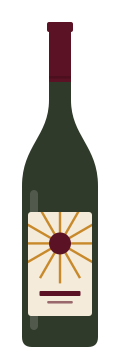
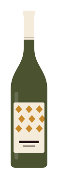
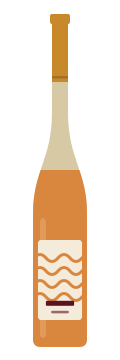
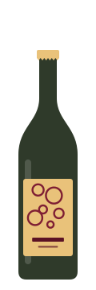
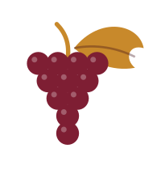
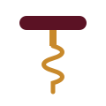

2 bouteilles
Le Premier Pas
Un rouge de soif et un blanc tout en fraîcheur, pour découvrir le vin nature sans se tromper.
32 €
Mar.–dim.
Click & collectCaviste · Paris 20e · depuis 2019
180 bouteilles de quarante-deux vignerons qu’on a tous rencontrés. Du gamay à 9 € pour le mardi soir au savagnin des grandes occasions, on vous aide à choisir, sans jargon.
N° 01 — Semaine du 12 octobre
Chaque lundi, Capucine ouvre une trentaine de bouteilles et en garde quatre. Ce sont celles qu’on vous mettra dans les mains si vous hésitez.

Domaine Lafrêche · gamay
« Cerise croquante et granit. On le sert frais, autour de 14 °C, avec tout ce qui sort du four. »
17 €Le réserver

Domaine de la Bruyère Haute · chenin
« Coing, miel et schiste. Un blanc droit qui tiendra dix ans en cave, si vous résistez. »
24 €Le réserver

Domaine Kieffer-Lenz · pinot gris
« Dix jours sur peaux : abricot sec, thé noir, une pointe d’amertume. Parfait avec un curry. »
26 €Le réserver

Domaine Vaurelle · chenin
« Un pét-nat trouble et joyeux, poire et brioche. Décapsulez-le bien frais, au-dessus de l’évier. »
16 €Le réserver
N° 02 — Click & collect
Pour un dîner improvisé ou un cadeau oublié : vous choisissez en ligne, on prépare votre sac, il vous attend au frais à votre nom.
Filtrez par couleur et par budget. Chaque bouteille a son petit mot, écrit par nous après l’avoir goûtée.
Paiement sécurisé par carte. Vous choisissez un créneau de retrait, dès deux heures après la commande.
Donnez votre nom au comptoir. Les blancs et les bulles sont au frais, prêts à ouvrir.
N° 03 — Le rendez-vous du jeudi
Un jeudi sur deux, de 19 h à 21 h, on pousse les cartons et on sort la grande table. Six vins servis à l’aveugle ou non, une assiette de fromages et de charcuterie du quartier, et souvent le vigneron en personne.
Prochaine séance
Jeudi 22 octobre · Le Jura, sans détour
Avec Bastien du Domaine Brûlefer · 28 € par personne · reste 6 places
N° 04 — Coffrets cadeaux
Caisse en bois ou papier kraft, carte écrite à la plume par nos soins. Prêts en 2 h, ou livrés dans le 20e à vélo le samedi.
2 bouteilles
Un rouge de soif et un blanc tout en fraîcheur, pour découvrir le vin nature sans se tromper.
32 €
3 bouteilles · le plus offert
Un pét-nat, un rosé de repas et un orange surprenant. De quoi animer une soirée entière.
49 €
3 bouteilles · caisse bois
Trousseau, savagnin ouillé et chardonnay de garde. Pour un amateur, ou pour vous convertir.
95 €
N° 05 — La cave
Capucine Rolland a passé dix ans en salle, Yanis Debré six vendanges entre l’Anjou et le Jura. En 2019, ils ont repris l’ancienne mercerie du 41 rue de la Maquette et gardé ses tiroirs en chêne, qui servent aujourd’hui de casiers à bouteilles.
Ici, « nature » veut dire : raisins bios ou mieux, vendanges à la main, rien d’ajouté en cave sauf, parfois, une pincée de soufre à la mise en bouteille. Et un vin qui reste bon, tout simplement.
« Dites-nous ce que vous mangez ce soir et combien vous voulez dépenser. On s’occupe du reste. »

Uniquement des domaines en bio ou en biodynamie, rencontrés sur place.

Chaque nouvelle bouteille passe par le comptoir avant d’entrer en rayon.
Un tiers de la cave sous 15 €. Le prix affiché est le prix payé, sans surprise.
N° 06 — Venir à la cave
À l’angle de la petite place aux platanes, la devanture bordeaux avec les casiers en vitrine. Métro et bus à cinq minutes à pied, arceaux à vélos devant la porte.
| Lundi | Fermé |
|---|---|
| Mardi | 16 h – 21 h |
| Mercredi | 16 h – 21 h |
| Jeudi | 16 h – 21 h dégustation à 19 h |
| Vendredi | 16 h – 21 h |
| Samedi | 11 h – 21 h |
| Dimanche | 10 h 30 – 13 h 30 |